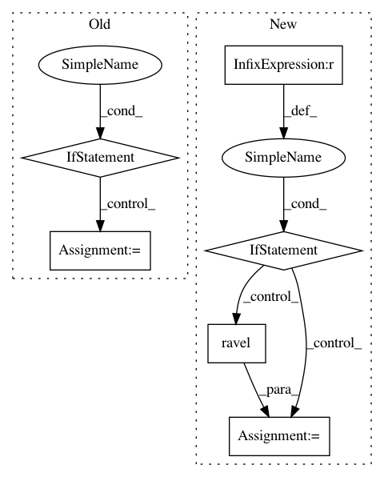

1a8468988ae35b6d3814288018fc2f9056e74974,dipy/reconst/gqi.py,GeneralizedQSampling,__init__,#GeneralizedQSampling#Any#Any#Any#Any#Any#Any#Any#,54
Before Change
QA[i][:l] = peaks[:l]
IN[i][:l] = inds[:l]
if mask==None:
for (i,s) in enumerate(S):
//Q to ODF
odf=np.dot(s,q2odf_params)
peaks,inds=rp.peak_finding(odf,odf_faces)
glob_norm_param=max(np.max(odf),glob_norm_param)
//remove the isotropic part
peaks = peaks - np.min(odf)
l=min(len(peaks),5)
QA[i][:l] = peaks[:l]
IN[i][:l] = inds[:l]
//normalize
QA/=glob_norm_param
if len(datashape) == 4:
self.QA=QA.reshape(x,y,z,5)
After Change
if mask != None:
if mask.shape[:3]==datashape[:3]:
msk=mask.ravel().copy()
if mask == None:
mask=np.ones(datashape[:3])
msk=mask.ravel().copy()
//memory allocations for a series of voxels
if len(datashape)==2:
x,g= S.shape
QA = np.zeros((x,5))
IN = np.zeros((x,5))
In pattern: SUPERPATTERN
Frequency: 3
Non-data size: 6
Instances
Project Name: nipy/dipy
Commit Name: 1a8468988ae35b6d3814288018fc2f9056e74974
Time: 2011-07-21
Author: garyfallidis@gmail.com
File Name: dipy/reconst/gqi.py
Class Name: GeneralizedQSampling
Method Name: __init__
Project Name: pavlin-policar/openTSNE
Commit Name: 41461ba820c816be1f001b5d53d6086089c2f441
Time: 2018-06-22
Author: pavlin.g.p@gmail.com
File Name: tsne/tsne.py
Class Name:
Method Name: kl_divergence_fft
Project Name: nilearn/nilearn
Commit Name: 9b9095f877f603d91495c72f91e4fddf61f1724e
Time: 2019-07-22
Author: jerome@dockes.org
File Name: examples/02_decoding/plot_haxby_stimuli.py
Class Name:
Method Name: